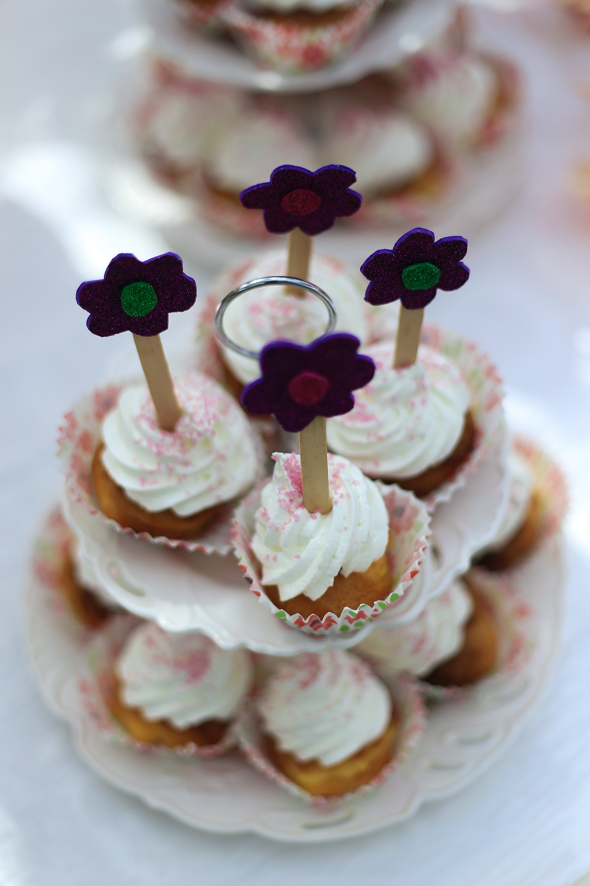

Carta de pasteles
Aquí te ofrecemos la carta de nuestros pasteles. Los tenemos en diferentes tamaños para que podáis disfrutar todos en casa, tanto los más golosos como los más deportistas. Todos los pasteles son elaborados de forma artesanal en nuestro obrador y de ahí se distribuyen directamente a nuestras tiendas, sin intermediarios para que no pierdan ni un ápice de su sabor original.
Pasteles de Crema
Nuestros pasteles de crema son perfectos para cualquier momento y, sobretodo, para los paladares más exquisitos.

Pasteles de Nata
Si crees que la crema es demasiado empalagosa para ti, te invitamos a probar nuestros pasteles de nata artesanos. ¡Repetirás seguro!
Pasteles de Chocolate
Si eres de los golosos de la casa, los pasteles de chocolate son tu opción. Llenos de sabor, puedes elegir si los quieres con pepitas de chocolate blanco por encima.

| Nombre del pastel | Tiempo de elaboración | Tiempo de cocción | Calorías |
|---|---|---|---|
| Pastel de crema | 1 hora | 20-30 minutos | 304 |
| Pastel de nata | 20 minutos | 40 minutos | 209 |
| Pastel de chocolate | 20 minutos | 45 minutos | 371 |
En la tabla superior encontramos los tipos genéricos de pasteles que podemos encontrar en nuestras tiendas. Para cada uno de ellos estipulamos el tiempo medio de elaboración y cocción así como las calorías que contiene.